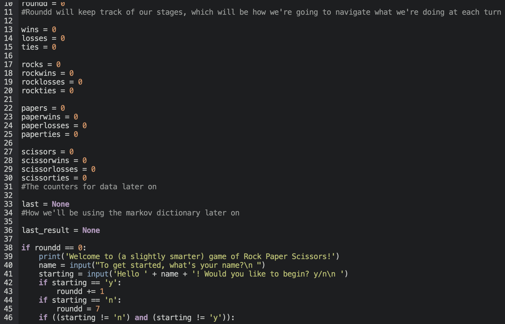
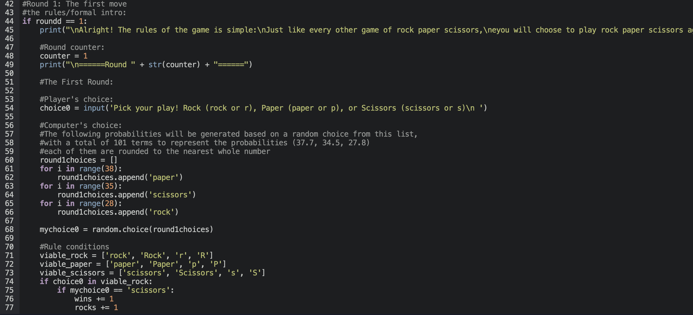
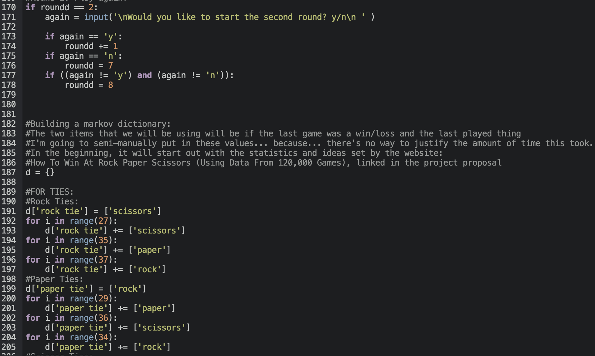
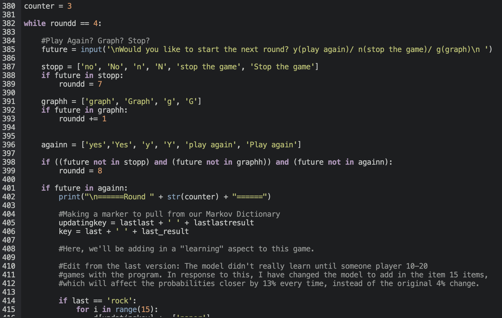
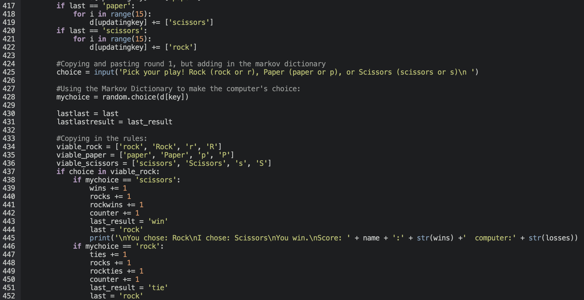
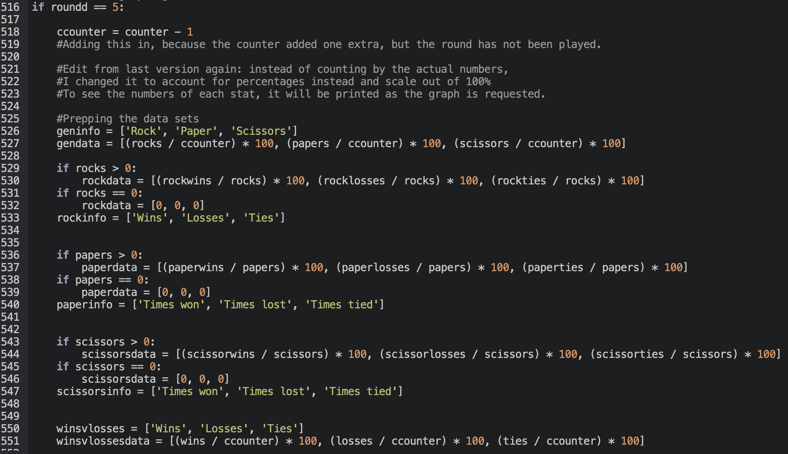
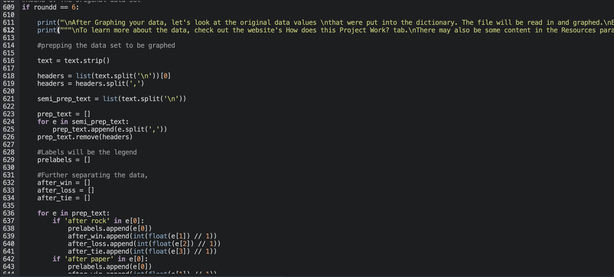
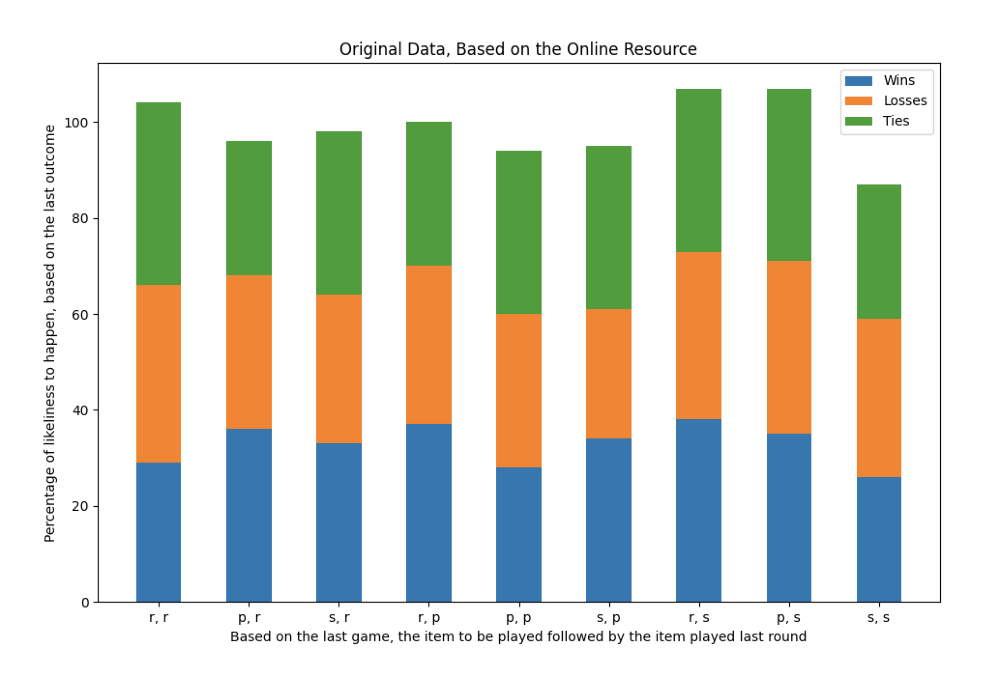
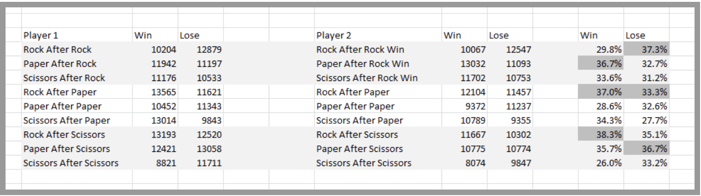

Welcome to a Slightly Smarter game of Rock Paper Scissors! The whole point of this project was to create a python program that could run a semi-intelligent game of Rock Paper Scissors using dictionaries, probabilities, and inputs. This means that, over time, the player using the program will train it to play more intelligently while taking the player's previous inputs into consideration. If someone plays the game with a specific pattern, the program is intended to analyze the given pattern and use it to make future decisions in each of the rounds.
In addition to this, the program has to be able to discern the rules of Rock Paper Scissors, and map out any data or input that is sent by the user. This involves inputs and variables to keep track of scores, the number of each item played (rock, paper, or scissors), the name of the player, and the outcomes of each round and each outcome for the specific item played. Moreover, the program uses a Markov Dictionary that effectively changes the probability of the program's choices given the outcome of the last two rounds. To wrap everything up, the game also has an option to graph the data from the games of Rock Paper Scissors after the third round. This is all with the help from importing the modules from matplotlib's pyplot, numpy, and random.
How do I use the project?
The project will be run over Thonny, or any application that can run a python program. Upon pressing run, the program will begin to print out questions surrounding names, if you would like to play, and more. If these are responded to correctly and positively in the shell, then the program will continue to run the player through the game until the player decides to graph their results, concequently ending the program. The player will be able to interact through inputs, that can either be words or letters, with some leeway for capitalization. Any inputs will be specified by the program through printed text.
Please note that if the wrong input is put in, the program will shut itself down to avoid an incorrect symbol being added to the Markov dictionary. It will subsequently exit the program and the player would have to start over.
How does this project work?
As mentioned before, the project aims to play a game of rock paper scissors with the user. To do this, the program takes a series of inputs and commands from the user that allows them to advance on to the next round, play a given item, end the game, and even graph their plays and choices. The reason why this program is "slightly smarter" is because, rather than sticking to these inputs of data and information, it also adds on the data from the rounds that it plays against you. Given the outcome and last played item from the last round, the computer saves the opposite of your next input into the Markov Dictionary so that it can use the random.choice() command after evaluating the last thing that the user played and the last outcome.
To graph these results, the program uses the module matplotlib's pyplot in order to create a bar graph using various strings and data values that have been accumulated as the rounds go on. These are based on the player's input, of course, and are added as the player chooses Rock, Paper, or Scissors. In addition to this, numpy is also used in order to create an array and read a text file to make a stacked bar plot, with all of the starting values that were inputted into the Markov Dictionary. All of these elements, I feel, somewhat effectively incorporates some of the things that I found most fun in semester 2's computer science projects, of course, with a fun game aspect to it that makes it interactive and enjoyable to the user. This brings all of these ideas together into a game, composed of interesting probabilities, code, and math.
Now! For the interesting part of this (this claim may be disputed)— the code! The following images will be shared with some captions or side text describing some of its uses. The code itself is broken down into "rounds" that separate each function and it's individual part in creating the program. Though the screenshots occasionally do not incorporate the entire round's code, it can still be viewed on the project's python file. They are just there to show a general idea of how each round works.

To the left is Round 0: The Setup. In this, the program creates most of the variables that it will be using to count the "rounds", collect some of the data necessary to build the graph, and above (not visible) is the importing of the modules random, numpy, and matplotlib.pyplot as plt. This also reads in the text file that is later used in round 6. At the end of this round, the program creates the introduction, which asks for your name and if you want to begin the next round.
To the right is Round 1: The First Move. In this, the rules of the game are described, and the first action is called— the player has to choose rock, paper, or scissors, which can be various inputs as long as they fall within the "viable" data that is described by the list. Upon receiving this "viable" data, the program is able to classify whether it's randomly chosen item from a list of probabilities will succeed or fail against the player. The results of this are all printed to a string, and reported to the player. Behind the scenes, this "rules" system also marks down the last thing the player played, the outcome, and other things later used for the graph. Although all of this round isn't included, the rest of it is simply just inputting values and their various outcomes— which can be viewed on the program. It's just too lengthy to take a screenshot of.


To the left is Round 2: Play Again? This space is used to ask if the player would like to continue or stop, and it's also used to build the Markov Dictionary. Of course, the Markov Dictionary takes 9 different key inputs, dependent on the item played and the last outcome. Although no data can be used, the Markov Dictionary can begin to become of use in the future rounds.
To the right is Round 3: Things get Smarter. This round is used to prep the program to be able to loop the program indefinitely. As we do not yet have all of the values needed to add to the Markov Dictionary, round 3 incorporates the Markov Dictionary and also begins to record keys, and archives information from two rounds ago as "lastlast" and "lastlastresult" for use in the next round. Besides this, the rules are again copy-and-pasted from round 1 to run this round.


Above is Round 4: The Loop. This round is where the game can last indefinitely— the player can continue to play the game as long as their inputs are right, and the program effectively manages to add information to the Markov Dictionary and pull information from it without too much of a hassle. Every time a new round starts, the player is prompted with an input to either continue playing, stop the program, or graph their results. The request based on this input will be accepted, and will either continue, stop, or advance this program. This is also where the big part of some form of Machine Learning takes place. By adding on information and trying to "teach" this program any patterns in the player's outputs, the program is technically learning on its own.

To the left is Round 5: The Graphing. Although this isn't the full screenshot, I'm sure that the message is conveyed— this sums up all of the information that we had left open in round 0 and added to throughout the game. This again uses an input to request different graphs and information in the form of bar graphs created by Pyplot. This scales from 0-100, and has been modified to count by percent, making it scale off of the times that it was chosen as a whole. Different sets of data can be graphed, including choices, results from playing a certain item, and wins/loss/ties ratios. They can all be requested too, as long as they are spaced apart.
To the right is Round 6: The original data set. Although there is no user input here, the program reads in the file based on the statistical data mentioned in the "Online Resources" portion of this website. In reading this file in, the program uses numpy and pyplot to create a stacked barplot, as shown below, based on the data. Some of the data doesn't exacty add up to 100, which is something notable while covering the statistics of the computer actually choosing a choice— how accurate is this to the actual numbers of Justin Collier's data?


The Files
final.html: This html file
Python_Project.py: The python file that runs the rock paper scissors program, Markov Dictionary, and the graphing.
rpsdataset.txt: The text file that the Python Project will be reading through for the original statistics graph.
Anything labeled (roundx-y.png): these will be screenshots of the program. They are not properly organized and can vary from round0-round6.
rpsdata.png & rpsdata0.png: Two photos that are used in the Statistics/Online resources part of this website.
rpswheel.png & rps.png: These two are the photos used at the top of this website, mentioned again in online resources.
Online Resources and Statistics
Concerning modules: besides the mentioned matplotlib.pyplot and random, numpy was also used. In this case, numpy was just used to simplify data for round 6, and it was used to create an array to build a figure, which is used in simplifying the creation of the stacked bar plot effect.
To quickly describe Numpy, it's a module/package used for scientific computing, with a library that provides the ability to make arrays, matrices, and many other mathematical, logical, sorting, selecting, and shape manupulating functions. It can handle basic linear algebra, statistical simulation, random simulation, and much more, but we're just gonna be using it to make arrays to build our stacked plot figure.

Now to talk about statistics— using the website How To Win At Rock Paper Scissors (Using Data From 120,000 Games) by Justin Collier, I used data such as the spreadsheet above and the statistics from the image to the right to create a Markov Dictionary that serves as a starting point for the computer just so that it doesn't select anything with pure randomness. Using these statistics, the dictionary then accounts for 2 different things: the last item played and the outcome— this is used to classify the likeliness of the next item that a person will play, which will determine the program's next semi-random choice. For more on the program, see How does this project work?
Any input must not stray from the input specified by the program, or else it will end itself.
The original data doesn't add exactly to 100 in some cases, as the website that the statistics are based off of didn't provide numbers that added up to 100%.
 A download link for the project
A download link for the project